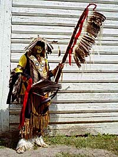

|
|
"Environmentally Sensitive Area". Please be careful where you walk and try not to disturb the natural environment. For additional information please contact Tourism Saskatchewan. | ||
| Wanuskewin Heritage Park | |||
| Location: | 5 kms. north of Saskatoon on the banks of the South Saskatchewan River. | ||
The Northern Plains Indians had a culture and spiritual foundation that was part of the prairie environment. These people visited the Wanuskewin site on a regular basis for over 6,000 years. | |||

They came here to hunt, to gather food and herbs, to escape the winter winds, and to meet others in worship and in celebration. | |||
The protected valley where Opamihaw Creek meets the South Saskatchewan River was an ideal year-round campsite, providing shelter from winter winds, and abundant supplies of food, plants, water, and wood. | |||
The power of Wanuskewin captures your imagination as soon as you enter the park gates. You feel the thunder of the great bison. | |||

Feel the vitality of the Northern Plains Indians who gathered here, year after year, for thousands of years; to hunt bison and to gather food and herbs. | |||
Wanuskewin is representative of Indian cultural values and the five Indian tribes of Saskatchewan; Nakota, Saulteaux, Cree, Dene, and Dakota. | |||
There are nineteen archeological sites representing the Northern Plains Peoples but only four have been extensively worked on to date:
| |||

As you approach the Visitor Centre, you walk between large stone cairns similar to those that marked an actual buffalo drive lane on this site. Buffalo were funnelled through the drive lane, then over the edge of the cliff where the visitor centre is now located. | |||
The inside of the centre is dominated by a buffalo pound constructed of logs. Inside the pound is a statue of a shaman or spiritual leader holding a buffalo skull high above his head. The shaman played a key role in the hunt, beckoning the animals to the corral where they would be trapped and killed. | |||
After seeing the film in the main theatre describing the highlights of Wanuskewin, enter the main hall. This area is dominated by hand-stitched buffalo hide tipis. Tools, utensils, foods, and medicines give you an idea of what life was like long ago in an Indian encampment. The most dramatic exhibit represents a buffalo jump, where the great beasts are plummeting to their deaths over a high cliff. | |||
Another theatre with a backdrop depicting the walls of an excavation site introduces you to the wealth of archaeological material unearthed at Wanuskewin. | |||
In the lab next to the theatre, you can watch archaeologists analyzing the excavated bones and artifacts. | |||

Archaeologists maintain that the findings are of international significance as Wanuskewin has virtually every type of archaeological site common to the Northern Plains, all within walking distance of each other. The sites are well preserved as very little land in this valley has ever been cultivated. | |||

The park's 8 kilometres (5 miles) of walking trails take you to the most significant sites. You will see a buffalo jump where the animals were stampeded over the edge of a cliff, a buffalo pound, places where the animals were processed, and tipi rings which mark ancient campsites. | |||

There's also a rare boulder alignment known as a medicine wheel, estimated to be 1500 years old. When there is a dig taking place, you can watch archaeologists at work and chat with them about their discoveries. Excavations will continue for at least 30 more years. | |||
Walking trails at Wanuskewin:
Trail of the Discovery Trail of the Buffalo Patch of the People Circle of Harmony | |||
 Each day brings different activities such as demonstrations of tanning hides, making bannock, throwing the spear-like atlatl, or flint-knapping to make tools. | |||
In the 500-seat amphitheatre next to the visitor centre, performances of traditional singing and dancing, storytelling, or a variety of other cultural presentations are held. | |||
Overnight camp programs for adults, families or groups give you the chance to sleep in a tipi, experience traditional storytelling and outdoor cooking, and learn the many life skills of the Northern Plains Indian culture. | |||
The restaurant's specialties include whitefish, buffalo burgers and saskatoon berry pie. The gift shop carries a wide selection of arts and crafts by local First Nations artists. Wanuskewin Heritage Park is open year round. | |||